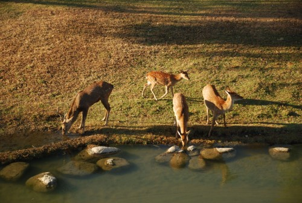
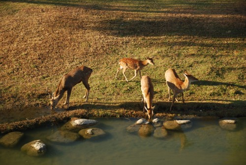

Seoul Forest
Located between Jungnangcheon Stream and Hangang River, Seoul Forest, which was opened in 2005, is one of the most loved park by citizen.
The park consists of four parts, Culture & Art Park, Educational Experience Park, Eco-forest Park, and Riverside Park along Hangang River.
Seoul Forest Park is the first one which is established and managed by Citizen group as a public-private partnership.
From 2003 to 2005, more than 5,000 citizens and 70 firms had participated to plant trees for the park.
Since then it has been developing continuously with many volunteer activities and donations.
Seoul Forest Park has been managed by an NPO, named Seoul Forest Park Conservancy under the contract with Seoul Metropolitan Government.
 


- Visiting hours: 24 hours open year-round (some parts are closed on Monday)
- Address: 273, Ttukseom-ro, Seongdong-gu, Seoul, Republic of Korea
- Contact number: 02-460-2905
- Seoul Forest